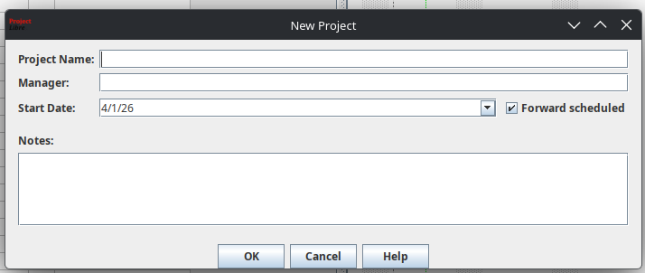
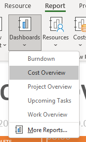

Gantt diagramm
Gantt diagramm on projekti ajaplaan, kus ülesanded on esitatud horisontaalsete ribadena.
- Sisestamine: Sisesta ülesannete nimed, kestused ja alguskuupäevad vasakpoolsesse tabelisse.
- Visualiseerimine: ProjectLibre loob automaatselt ribad paremale poole ajaskaalale.
- Navigeerimine: Kasuta Zoom In/Out nuppe Task menüüs, et vaadet kohandada.

